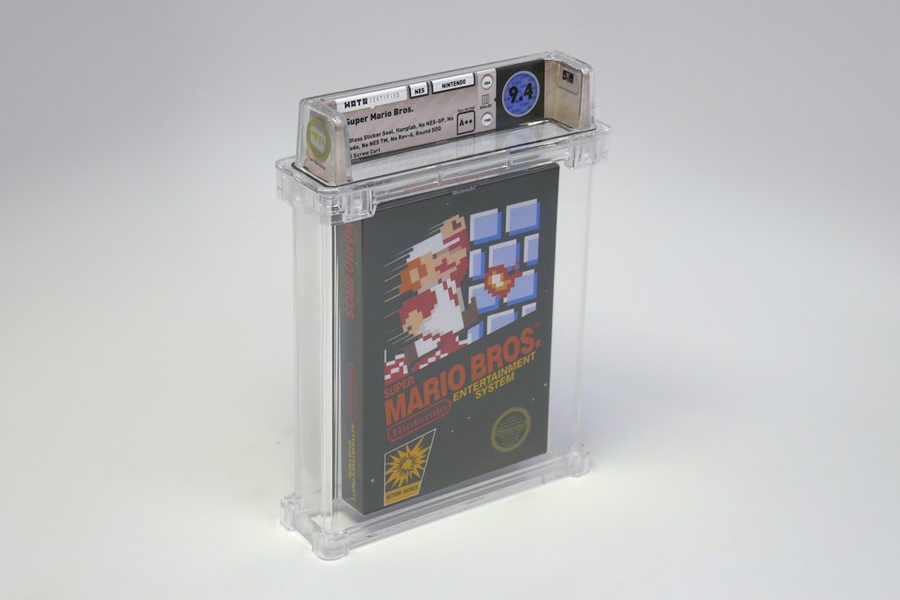
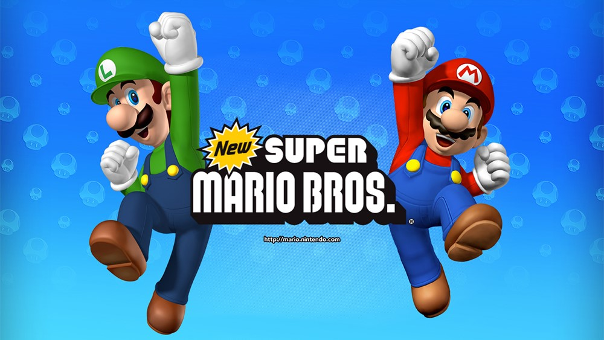
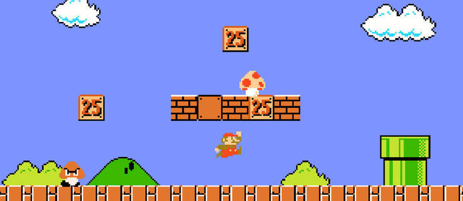
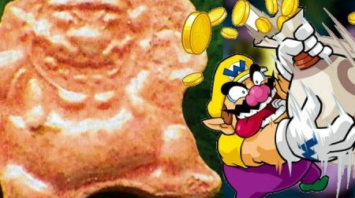
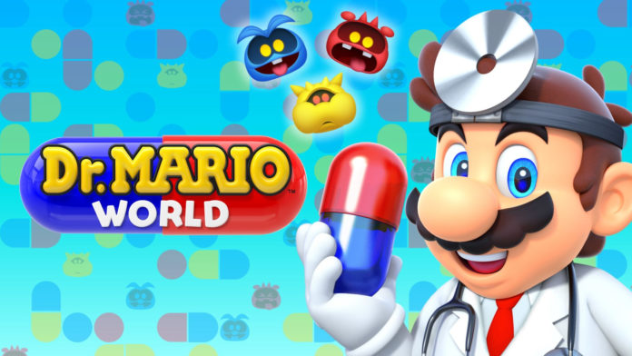
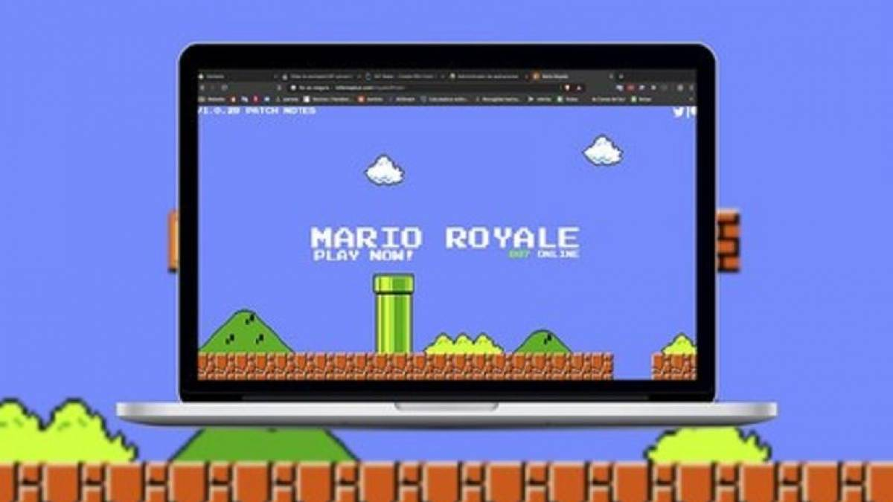
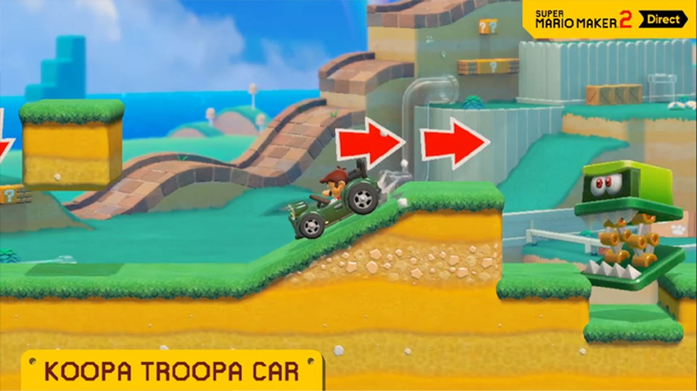

Super Mario Run, primeiro jogo da franquia para smartphone, chega hoje ao IOS
Anunciado em setembro, durante o lançamento do iPhone 7, o primeiro jogo desenvolvido pela Nintendo para smartphones chega nesta quinta-feira ao iOS. Usuários de Android terão de esperar um pouco mais. O download do game é gratuito, mas dá acesso apenas para uma versão de teste das primeiras fases. Para jogar a versão completa o preço anunciado para jogo nos Estados Unidos é de US$ 9,99. Na App Store brasileira, o jogo ainda aparece como indisponível. O mundo traz nove fases, incluindo uma floresta, um navio cheio de moedas e um terreno mal-assombrado de uma casa infestada de fantasmas!
Super Mario Run é a versão criada especialmente para dispositivos móveis, com uma dinâmica diferente do tradicional game dos consoles. Os criadores trabalharam em uma produção específica para essas plataformas, por isso, uma de suas principais características é que se pode jogar apenas com uma mão, segurando o celular. O personagem também se movimenta sempre da esquerda para a direita de modo "infinito". É clicando na tela para fazer Mario pular e se mexer para pegar moedas até chegar ao objetivo. Você controla o Mario tocando na tela, enquanto ele avança continuamente. Os seus reflexos irão definir a resposta do personagem, então você precisa mostrar a sua habilidade em manobras, saltos estilosos, giros no ar e escaladas em parede para coletar moedas e chegar ao objetivo final!
A Daisy está perdida, então tente avançar o máximo no Remix 10 para conseguir encontrá-la! Se você encontrá-la, ela irá se juntar à sua equipe. A manobra específica dela, o salto duplo, pode mudar a forma como você joga nas fases! E Agora você pode ouvir músicas salvas no seu dispositivo enquanto joga Super Mario Run. Mario e seus amigos irão usar fones de ouvidos quando esta funcionalidade estiver sendo usada! Super Mario Run é um jogo de plataforma desenvolvido pela Nintendo para iOS e Android. Foi lançado no iOS em 15 de dezembro de 2016 e foi lançado para o Android em 23 de março de 2017. É o primeiro jogo da franquia Mario desenvolvido para dispositivos móveis.
E3 2019: SUPER MARIO MAKER 2 Foi Anunciado Exclusivo para Swith
Durante o segmento dedicado a Super Mario Maker 2 na transmissão ao vivo da Nintendo na E3 2019, Takashi Tezuka confirmou que a equipe está trabalhando para permitir que amigos joguem juntos online. O comentário foi feito em reposta à notícia de que o pareamento de jogadores no modo online será feito de forma aleatória, uma vez que "com tabelas de pontuação globais, o pareamento das partidas competitivas pode ficar comprometido se você jogasse com seu amigos". A Nintendo também confirmou a novidade pelo Twitter.
A limitação não foi muito bem recebida, pois muitos jogadores planejam experimentar os novos recursos multiplayer de Super Mario Maker 2, que permite aos jogadores controlarem Mario, Luigi, Toad ou Toadette para completar as fases.
A porção online de Super Mario Maker 2 é composta pelos modos Multiplayer Versus e Multiplayer Co-Op. No modo Versus, os jogadores têm um rank que aumenta ou abaixa dependendo da proporção entre falha e sucesso. No modo Co-Op, quando um jogador completa a fase, todo mundo ganha.
Quando se fala na criação de jogos, a primeira coisa que se precisa pensar é em game engine. Esse é o termo geralmente traduzido como motor gráfico, mas traz a intuição errada de que se está falando de algo para criar um cenário, um personagem ou algo assim. A palavra traduzida remete mais à criação meramente visual, atrelada à palavra gráfico.
Contudo, game engine é o conjunto de ferramentas que serão o guia do desenvolvedor na criação de um título. É com ela que ele vai saber se consegue fazer um bom jogo em 2D, aventura 3D, mecanismo de luta ou o que lhe passar pela cabeça. É isso que Super Mario Maker 2 é: uma game engine para criação de jogos da franquia Mario.
Super Mario Bros completa 30 anos nesse ano de 2019!
Com seu inconfundível macacão azul, seu boné vermelho e seu vasto bigode, o Super Mario soprou ontem três velas para comemorar o seu trigésimo aniversário. A Nintendo convidou 700 seguidores para a festa de aniversário enquanto vários artistas interpretaram para o mascote a contagiante melodia que aparece no seu primeiro videogame. Não é para menos. O Super Mario chega aos 30 anos como um ícone popular que conquistou um espaço privilegiado na história dos videogames e cuja franquia continua a faturar milhões de euros no mundo todo.
O Super Mario Bros foi lançado no Japão em 13 de setembro de 1985 e chegou aos Estados Unidos alguns meses depois. Tornou-se um sucesso imediato, em um momento em que o mercado internacional de videogames vivia uma crise. As aventuras do encanador, cuja missão era resgatar a princesa Peach passando por encanamentos e evitando as plantas carnívoras, foram revolucionárias, seja pelo design, seja pelo enredo ou por sua capacidade de prender os jogadores. A primeira versão vendeu mais de 40 milhões de cópias. Houve quem comparasse a influência adquirida por Mario à de Mickey Mouse.
Sua fama fez com que ele se transformasse no protagonista de centenas de jogos de outros tipos: de lutas a esportes, inclusive corridas de kart. A franquia comercializou mais de 310 milhões de jogos desde a sua criação, ou seja, mais de 10 milhões por ano. E o próprio Mario também evoluiu: inicialmente com um rosto praticamente irreconhecível (embora identificável) nos anos oitenta por causa da limitação de 16x32 pixels, tornou-se mais expressivo e, por fim, tridimensional. Lançaram-se amigos, novos inimigos e missões cada vez mais complicadas para cumprir.
Criador do Super Mario: “Não criei obras para serem consideradas arte”
Amarela. Azul. Vermelha. Três cabeças aparecem na fresta de uma porta. Olham fixamente para um homenzinho em traje de astronauta que verte um denso líquido cor de framboesa. Esse ser diminuto é o Capitão Olimar, observado por três pikmin. Os personagens desse mundo irreal e colorido, que é o videogame da Nintendo criado por Shigeru Miyamoto, tornaram-se independentes. Voam livres. O pai do Super Mario Bros mergulhou no mundo do cinema com três curtas de animação, Pikmin Short Movies, apresentados no último Festival Internacional de Cinema de Tóquio.
“Existem coisas que não podemos expressar em sua totalidade por meio dos videogames, como ocorreu com estes curtas. Sempre estou interessado em outras formas de expressão se oferecerem a possibilidade de expandir o mundo dos videogames”, explica Shigeru Miyamoto (Sonobe, 1952).
Os pequenos seres que parecem feitos de borracha protagonizam três histórias cheias de referências a outros títulos da casa. Correm, sentem medo, preocupam-se, riem, criam estratégias, banham-se em barro. E fazem tudo sozinhos. Não há nenhum jogador controlando seus movimentos. Ninguém que aperte uma seta que aponta para uma direção. “O jogador não pode controlá-los. Uma espécie de animais de companhia, talvez essa seja uma boa maneira de descrever o que os pikmin significam para o jogador”.
E3 2019: Super Mario Maker 2 permitirá multiplayer online com amigos
Exclusivo para o Nintendo Switch, o Super Mario Maker 2 teve durante o E3 2019 uma longa exibição apresentando boa parte do que poderá ser visto por usuários, tão logo este chegue ao mercado consumidor (sendo sua data de lançamento confirmada para o dia 28/06).
Nessa demonstração, que contou com a presença de Takashi Tezuka, produtor responsável pelo título, foi confirmado que o Super Mario Maker 2 permitirá com que se possa jogar online com amigos, podendo ser possível inclusive trabalhar em conjunto na criação.
Vale lembrar que anteriormente, já havia sido confirmada a possibilidade de partidas com até quatro jogadores, sendo inicialmente esperado que isso fosse acontecer de forma presencial na contramão do mercado, algo que gerou questionamentos por parte dos fãs, fazendo com que a empresa abrisse os olhos e repensasse na possibilidade de incluir a jogabilidade por meio da internet.
Má notícia: “Mario Kart Tour” Mobile tem microtransações
Depois de “Mario Run”, “Mario Kart Tour” deve ser o maior jogo para celular da Nintendo. O amado kart racer é reconhecido em todo o mundo, o que faz de sua estréia em dispositivos móveis um grande negócio para um desenvolvedor que ainda tenta entender como fazer jogos free-to-play. Atualmente, ele está em fase beta no Android.
Pessoalmente, sou um jogador do iOS, então, ainda não consegui testar. Mas as primeiras análises já chegaram, e elas são cautelosas, para dizer o mínimo: “Mario Kart Tour” parece ser uma adaptação decente do conceito “Mario Kart” para o celular, mas é um jogo free-to-play em sua essência, com o tipo de microtransações que o governo dos EUA quer regulamentar.
Depois de “Mario Run”, “Mario Kart Tour” deve ser o maior jogo para celular da Nintendo. O amado kart racer é reconhecido em todo o mundo, o que faz de sua estréia em dispositivos móveis um grande negócio para um desenvolvedor que ainda tenta entender como fazer jogos free-to-play. Atualmente, ele está em fase beta no Android.
Pessoalmente, sou um jogador do iOS, então, ainda não consegui testar. Mas as primeiras análises já chegaram, e elas são cautelosas, para dizer o mínimo: “Mario Kart Tour” parece ser uma adaptação decente do conceito “Mario Kart” para o celular, mas é um jogo free-to-play em sua essência, com o tipo de microtransações que o governo dos EUA quer regulamentar.
Criadores de Super Mario Run farão novo game mobile de Pokémon
Quem curte jogar no celular provavelmente já ouviu falar na DeNA. Caso não saiba que companhia é essa, ela foi a responsável por desenvolver Super Mario Run, e pelo visto já está se preparando para um novo projeto: um game estrelado pelos simpáticos pokémons.
A informação foi revelada durante uma reunião para falar sobre os resultados da empresa para o ano fiscal de 2018, onde houve a menção de que a DeNA vai trabalhar em conjunto com a The Pokémon Company para desenvolver o que eles consideram “um novo e empolgante” jogo estrelado por Pikachu e companhia.
Quem curte jogar no celular provavelmente já ouviu falar na DeNA. Caso não saiba que companhia é essa, ela foi a responsável por desenvolver Super Mario Run, e pelo visto já está se preparando para um novo projeto: um game estrelado pelos simpáticos pokémons.
A informação foi revelada durante uma reunião para falar sobre os resultados da empresa para o ano fiscal de 2018, onde houve a menção de que a DeNA vai trabalhar em conjunto com a The Pokémon Company para desenvolver o que eles consideram “um novo e empolgante” jogo estrelado por Pikachu e companhia.
Yoshi levava socos de Mário e outros assuntos que agitaram as redes nesta sexta
Muitos fãs da série de jogos de videogame Super Mario World se questionavam se o protagonista batia ou não na cabeça de Yoshi para que ele pegasse itens com a língua. Em entrevista ao portal Kotaku, dois desenvolvedores do jogo confirmaram que a ideia original era que fossem desferidos socos do Mario contra Yoshi para que ele se assustasse, colocasse a língua para fora e pegasse os itens que apareciam em sua frente.
Muitas pessoas acham que Mario está apontando o dedo para frente, dizendo 'vá', então a língua de Yoshi sai. (...) No entanto, a configuração original que desenhei é Mario socando Yoshi na cabeça, com a língua do personagem disparando pela surpresa — explica o desenvolvedor Shigefumi Hino.
Desde pequenos, quando jogávamos Super Mario World no Super Nintendo, ouvíamos pessoas comentando que Mario batia na cabeça de Yoshi para que o dinossauro colocasse a língua para fora. Alguns acreditavam, outros não, o que gerava muita discussão. Agora a Nintendo finalmente revelou a verdade.
Super Mario Maker 2 é anunciado para Nintendo Switch
Super Mario Maker 2 é a sequência do jogo original do Nintendo Wii U que está em desenvolvimento exclusivamente para Nintendo Switch. Anunciado nesta quarta-feira (13), o jogo será lançado em junho de 2019 e promete oferecer ferramentas para que os jogadores criem as fases de Super Mario Bros. dos sonhos, contemplando muito mais itens e possibilidades em relação ao título anterior.
O trailer de revelação mostra que será possível criar ladeiras pela primeira vez na franquia. Também foi apresentada a possibilidade dos jogadores utilizarem o Lucky Bell, item vindo de Super Mario 3D World que concede uma roupa de gato aos personagens e que permite escalar paredes e atacar os inimigos com mais facilidade.
Em Super Mario Maker 2, os jogadores também poderão alternar entre os estilos visuais que marcaram a franquia da Nintendo: do Super Mario Bros. do NES ao mais recente New Super Mario Bros. U; outras novidades devem ser anunciadas em breve.
Os pequenos seres que parecem feitos de borracha protagonizam três histórias cheias de referências a outros títulos da casa. Correm, sentem medo, preocupam-se, riem, criam estratégias, banham-se em barro. E fazem tudo sozinhos. Não há nenhum jogador controlando seus movimentos. Ninguém que aperte uma seta que aponta para uma direção. “O jogador não pode controlá-los. Uma espécie de animais de companhia, talvez essa seja uma boa maneira de descrever o que os pikmin significam para o jogador”.
André Pase: Nintendo aposta em games de Luigi
Para a Nintendo, 2013 é o ano do Luigi. O irmão de Mario ganhou mais atenção, rendendo o bom Luigis Mansion 2 para o 3DS meses atrás. A celebração se encerra com New Super Luigi U para o Wii U e Mario & Luigi: Dream Team para o portátil.
Com o fim oficial do Wii na semana passada, a Nintendo segue seu dilema de conseguir emplacar o Wii U. Enquanto poucos jogos diferentes surgem - um problema para a empresa -, as apostas recaem sobre personagens antigos, em virtude do apelo com o público.
Com o fim oficial do Wii na semana passada, a Nintendo segue seu dilema de conseguir emplacar o Wii U. Enquanto poucos jogos diferentes surgem - um problema para a empresa -, as apostas recaem sobre personagens antigos, em virtude do apelo com o público.
A transposição de Luigi para o mundo de New Super Mario Bros U prometia. Infelizmente, a transformação do carro-chefe do console em uma versão para o outro irmão acaba mais como um modo diferente do jogo do que uma aventura nova espalhada por 82 etapas.
A principal diferença está no tempo para completar cada fase, reduzido a 100 segundos. Assim, o que antes era explorado com calma se tornou uma corrida contra o tempo, muitas vezes deixando as moedas em segundo plano para outra jogada. Há um problema grave de dificuldade nos níveis iniciais, fato que pode desagradar alguns jogadores.
CÓPIA LACRADA DE SUPER MARIO BROS. É VENDIDA POR US$ 100 MIL

Um dos jogos mais prestigiados de todos os tempos, Super Mario Bros. é daqueles títulos que podem ter envelhecido, mas continuam divertidos e sendo usados como referência por vários desenvolvedores. Assim, não é de se espantar que uma cópia da versão original, lacrada e em ótimas condições, tenha sido vendida por um valor considerável — mais especificamente, US$ 100.
As condições únicas do produto fizeram com que seu vendedor conseguisse arrecadar o maior valor já registrado por um game até hoje. O cartucho em questão pertence à última leva que a Nintendo trouxe às lojas de Los Angeles e Nova York durante os testes preliminares que testaram seu possível sucesso entre o público norte-americano.
Com 34 anos de idade, o Super Mario Bros. novinho ainda possui o selo da Nintendo que indica que sua embalagem jamais foi aberta. O último recorde de vendas para o jogo tinha sido estabelecido em 2017, quando uma cópia em boas condições foi vendida por US$ 30 mil, valor considerado um recorde na época.
A aquisição foi feita em conjunto pelos colecionadores Jim Halperin, Rich Lecce e Zac Gieg, que adquiriram o título que estava sendo vendido pela Heritage Auctions. O dono da cópia preferiu ficar anônimo, mas Deniz Khan, presidente da Wata Games (companhia que autentica itens de colecionador), garantiu que ele só concordou com a venda após ela superar os “três dígitos” em seu valor.
FILME DE SUPER MARIO BROS. DA ILLUMINATION SERÁ LANÇADO EM 2022

O nosso encanador mais querido do universo dos games estreará em seu próprio filme. A Nintendo anunciou que está trabalhando em uma parceria com a Illumination Entertainment para fazer um filme de Super Mario Bros. Ela revelou que a data do filme está prevista para 2022.Shigeru Miyamoto - o criador de Mario - está fortemente envolvido no processo de criação do filme em conjunto com a Nintendo e a Illumination. Chris Meledandri disse que "nunca vi isso acontecer com qualquer adaptação onde a voz criativa original está sendo adotada. Está sendo como se estívessemos abraçando Miyamoto".
Embora a Nintendo diga que a data de lançamento é algo entre 2022, é muito possível que aconteça alguma mudança, tanto da parte da Nintendo quanto da parte da Illumination Entertainment, que estão bem confiantes nessa parceria e na produção do filme.A Illumination é o estúdio conhecido por muitos filmes, como Meu Malvado Favorito, The Grinch e Sing!. Chris Meledandri, um dos fundadores do estúdio, falou sobre o filme do Super Mario Bros. e está bem aliviado sobre o filme - já existente - ser ruim, porque "eu gosto de que isso não foi bem feito da primeira vez, acho mais emocionante fazer um novo do que fazer outra versão de um filme que foi feito para começar de um jeito incrível".
Jogar Super Mario Bros é tão difícil quanto resolver um problema matemático complexo

Caso você sofra para terminar uma fase complicada de Super Mario Bros., não fique desanimado: cientistas afirmam que o game pode ser tão difícil quanto quebrar a cabeça com um problema matemático daqueles de derreter o cérebro. Caso você sofra para terminar uma fase complicada de Super Mario Bros., não fique desanimado: cientistas afirmam que o game pode ser tão difícil quanto quebrar a cabeça com um problema matemático daqueles de derreter o cérebro.
Pesquisadores do MIT (Instituto de Tecnologia de Massachusetts), liderado pelo cientista da computação Erik Demaine, afirmaram que uma fase de Super Mario é o equivalente a resolver os famosos "NP hard", problemas matemáticos envolvendo decisões difíceis. Por essa, nem Shigeru Miyamoto esperava.Caso você sofra para terminar uma fase complicada de Super Mario Bros., não fique desanimado: cientistas afirmam que o game pode ser tão difícil quanto quebrar a cabeça com um problema matemático daqueles de derreter o cérebro.
JAPONÊS É PRESO COM DROGAS DE WARIO, PERSONAGEM DE MARIO

Recentemente, um homem japonês foi preso Tokushima portando drogas. Até aí, somente mais uma notícia do mundo cotidiano e suburbano. O que chamou atenção, na verdade, é que as drogas tinham o formato de Wario, antagonista da franquia Super Mario Bros.Recentemente, um homem japonês foi preso Tokushima portando drogas. Até aí, somente mais uma notícia do mundo cotidiano e suburbano. O que chamou atenção, na verdade, é que as drogas tinham o formato de Wario, antagonista da franquia Super Mario Bros.Pelo jeito, até mesmo as drogas japonesas têm contextualização de jogos e anime no Japão. O rapaz foi preso com 50 tablets de ecstasy que tinham o formato de Wario. Segundo a Kobe Customs disse ao veículo Asahi que o design vem ganhando popularidade.
Pelo jeito, até mesmo as drogas japonesas têm contextualização de jogos e anime no Japão. O rapaz foi preso com 50 tablets de ecstasy que tinham o formato de Wario. Segundo a Kobe Customs disse ao veículo Asahi que o design vem ganhando popularidade.Recentemente, um homem japonês foi preso Tokushima portando drogas. Até aí, somente mais uma notícia do mundo cotidiano e suburbano. O que chamou atenção, na verdade, é que as drogas tinham o formato de Wario, antagonista da franquia Super Mario Bros.Pelo jeito, até mesmo as drogas japonesas têm contextualização de jogos e anime no Japão. O rapaz foi preso com 50 tablets de ecstasy que tinham o formato de Wario. Segundo a Kobe Customs disse ao veículo Asahi que o design vem ganhando popularidade.
Dr. Mario mobile chega em 10 de julho para Android e iOS

A Nintendo revelou que Dr. Mario World, a versão mobile do clássico Dr. Mario, chegará a celulares Android e iOS em 10 de julho. O jogo estilo Tetris foi anunciado em janeiro e trará o famoso encanador vestido de médico para combater vírus por meio de pílulas. A Nintendo revelou que Dr. Mario World, a versão mobile do clássico Dr. Mario, chegará a celulares Android e iOS em 10 de julho. O jogo estilo Tetris foi anunciado em janeiro e trará o famoso encanador vestido de médico para combater vírus por meio de pílulas.A empresa divulgou um vídeo mostrando como o game irá funcionar. Basicamente, a coisa segue o modelo tradicional do game e as pílulas são divididas em duas cores, cabendo aos jogadores a tarefa de acertar a cor correspondente ao vírus para matá-lo. Acertar um combo com mais de dois vírus aumenta a pontuação.
A empresa divulgou um vídeo mostrando como o game irá funcionar. Basicamente, a coisa segue o modelo tradicional do game e as pílulas são divididas em duas cores, cabendo aos jogadores a tarefa de acertar a cor correspondente ao vírus para matá-lo. Acertar um combo com mais de dois vírus aumenta a pontuação. A Nintendo revelou que Dr. Mario World, a versão mobile do clássico Dr. Mario, chegará a celulares Android e iOS em 10 de julho. O jogo estilo Tetris foi anunciado em janeiro e trará o famoso encanador vestido de médico para combater vírus por meio de pílulas.A empresa divulgou um vídeo mostrando como o game irá funcionar. Basicamente, a coisa segue o modelo tradicional do game e as pílulas são divididas em duas cores, cabendo aos jogadores a tarefa de acertar a cor correspondente ao vírus para matá-lo.
Conheça o Super Mario Bros em formato Battle Royale e veja como jogar

Fortnite, PUBG ou Apex Legends colocaram na mesa a popularidade atual de Battle Royale, games nos quais jogamos contra 99 jogadores (sozinhos ou por equipes), e onde só pode haver um vencedor. E você consegue imaginar um Battle Royale baseado no Mario Original da NES (Nintendo Entertainment System)? Bem, ele existe e parece agradar os jogadores.O InfernoPlus, um canal do YouTube, tornou esse jogo real, batizado de Mario Royale. No momento da publicação dessa matéria, ele já tinha 1.459 jogadores online. Fácil de jogar, difícil de vencer e acessível em nosso navegador. Estas são algumas das chaves do game, que tem o objetivo claro de ser o mais fiel possível à proposta original.
O InfernoPlus, um canal do YouTube, tornou esse jogo real, batizado de Mario Royale. No momento da publicação dessa matéria, ele já tinha 1.459 jogadores online. Fácil de jogar, difícil de vencer e acessível em nosso navegador. Estas são algumas das chaves do game, que tem o objetivo claro de ser o mais fiel possível à proposta original.O InfernoPlus, um canal do YouTube, tornou esse jogo real, batizado de Mario Royale. No momento da publicação dessa matéria, ele já tinha 1.459 jogadores online. Fácil de jogar, difícil de vencer e acessível em nosso navegador. Estas são algumas das chaves do game, que tem o objetivo claro de ser o mais fiel possível à proposta original.
Super Mario Maker 2 terá modo história e fases clássicas

Super Mario Maker 2 teve uma série de novos detalhes revelados durante uma conferência Nintendo Direct, entre eles um novo modo história e fases criadas pela própria Nintendo. O game receberá várias outras novidades em seu modo de criação, como o Angry Sun de Super Mario Bros. 3 e vários itens exclusivos de Super Mario 3D World agora em 2D. Super Mario Maker será lançado em 28 de junho para Nintendo Switch e será preciso ter uma assinatura do serviço Nintendo Online para enviar e baixar fases criadas.
Super Mario Maker 2 traz vários estilos de Mario para criar suas fases como: Super Mario Bros., Super Mario Bros 3., Super Mario World e New Super Mario Bros., porém o destaque fica por conta do estilo de Super Mario 3D World. Este modo conta com regras próprias e vários elementos 3D convertidos para 2D como o Power-Up de Cat Mario. Ele é incompatível com os outros estilos de jogo, mas traz loucuras como tirar um Koopa Troopa de um carro para dirigi-lo como se fosse um GTA em duas dimensões.No momento da publicação dessa matéria, ele já tinha 1.459 jogadores online. Fácil de jogar, difícil de vencer e acessível em nosso navegador. Estas são algumas das chaves do game, que tem o objetivo claro de ser o mais fiel possível à proposta original.